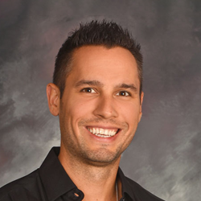
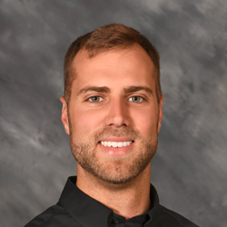
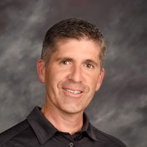

Staff
Chiropracters
Brian S. Lank, D.C., C.S.C.S.
|  |
Dr. Brian S. Lank was born and raised in the Pocono Mountains of Northeastern, PA. He and his family moved to Sunset Beach, North Carolina in the summer of 2002. After completing his undergraduate studies at Coastal Carolina University he enrolled at Logan University in St. Louis, MO. While pursuing his doctorate, he and another fellow graduate classmate designed strength and conditioning programs as well as golf-specific rehabilitation and injury prevention programs for local collegiate teams. He received the Titleist Medical Professional certification from the Titleist Performance Institute in Oceanside, CA for golf-specific exercise programs and rehabilitation in the fall of 2006. He also received certification in Active Release Technique, the gold standard for soft tissue injuries dealing with muscles, ligaments, tendons, and nerve entrapments. |
|
Education: Logan University of St. Louis |
Paul M. Hrvol III, D.C.
|
Dr. Paul M. Hrvol III, born and raised in rural Illinois, has always been a competitive athlete. What started as a small-town passion led to a baseball scholarship for Missouri Baptist University, where Paul would complete a Bachelor’s Degree in Biology and Minor in Biochemistry. |
|
Education: Missouri Baptist University and Logan University of St. Louis |
James Morosky, D.C.
|
Dr. James Morosky was born and raised in southwestern Pennsylvania. While in high school, he shadowed a local chiropractor and was immediately impressed with his integrative, evidence-based, and conservative approach to healthcare. He decided right then and there to become a chiropractor himself. |
|
Education: National University of Health Sciences in Lombard |
Alex K. Humbert, D.C.
|  |
Dr. Alex K. Humbert was born and raised in Shallotte, NC. He attended the University of Wilmington where he completed a Bachelor of Science degree in Exercise Science along with a minor in Psychology. After graduating he went on to further his education at Logan University where he completed his Doctor of Chiropractic degree. |
|
Education: Logan University of St. Louis |
Physical Therapist
Patrick McCauley, D.P.T.
|  |
Patrick McCauley grew up in the greater Washington, DC metropolitan area in Silver Spring, MD. He attended Miami University in Oxford, OH, and graduated with a degree in Exercise Science. He then went on to pursue graduate studies in physical therapy, completing his Masters of PT in 1999 and his Doctorate in 2004. He moved to North Carolina 3 years ago and currently resides in Leland, NC. |
|
Education: Miami University of Oxford |
Olivia Jasinski, D.P.T.
|
Dr. Olivia Jasinski, was born and raised in Syracuse, NY. She completed her Bachelor’s Degree and Doctorate of Physical Therapy, with a minor in Psychology, at Ithaca College before moving to North Carolina. Being an avid athlete her whole life, Olivia became fascinated by the human body and how it worked. |
|
Education: Ithaca College |
Lydia Smith, P.T.A.
|
Lydia Smith was born in Montgomery, AL, and raised in Titus, AL. She knew from an early age that she had a passion for helping people and trying to make them laugh, but she did not know how to incorporate that into her career. While playing highschool softball, she injured her knee and ended up having to have surgery and going to physical therapy to rehab her injury. |
|
Education: South University |